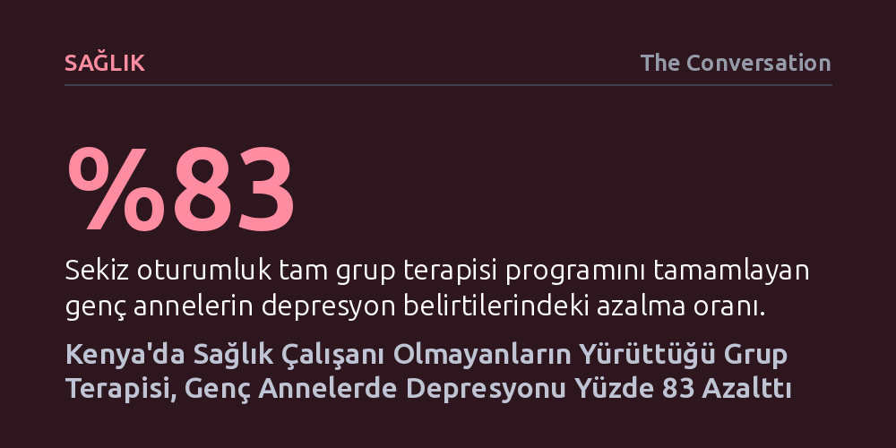

SAGLIK · The Conversation · 2026-09-08
Kenya'da uzman psikiyatristler yerine eğitilmiş toplum görevlilerince yürütülen sekiz oturumluk grup terapisi, gebe ergenlerin depresyon belirtilerini yüzde 83 oranında azalttı. Bulgular, ruh sağlığı hizmetlerinin uzman kıtlığında dahi birinci basamak sağlık hizmetlerine başarıyla taşınabileceğini kanıtlıyor.
Ruh sağlığı tedavisinin yalnızca uzman hekimlerin tekelinde olmadığını, birinci basamak sağlık sistemine entegre edilen akran destekli grup modelleriyle uzman açığının hızla aşılabileceğini gösteriyor.

Ergenlik döneminde yaşanan gebelik ve erken annelik, her koşulda ağır psikolojik ve fiziksel yükler barındırır. Ancak Kenya gibi gelişmekte olan ülkelerde bu tablo çok daha kırılgan bir zemine oturuyor. Ülkede 15-19 yaş arasındaki her yedi genç kızdan biri hamilelik deneyimi yaşamış durumda ve ergen doğum oranı her bin genç kızda 73 seviyesinde seyrediyor. Aile içi dışlanma, eğitim hayatının aniden yarıda kalması, ekonomik çaresizlik ve toplumun ağır ahlaki yargıları bir araya geldiğinde, bu genç kadınların ağır depresyona sürüklenme riski katlanarak artıyor.
Sorunun büyüklüğüne karşın mevcut sağlık altyapısı bu yükü taşıyacak donanıma sahip değil. 50 milyonu aşkın nüfusa sahip Kenya'da çalışan psikiyatrist sayısı yalnızca 150 civarında ve bu uzmanların neredeyse tamamı başkent ve büyük şehirlerdeki merkezlerde toplanmış durumda. Geleneksel psikiyatri ve birebir terapi modelleri zaten yetersiz olan uzman gücüne bağımlı kaldığından, genç annelerin ihtiyaç duyduğu psikososyal destek standart doğum ve çocuk sağlığı kliniklerine hiçbir zaman uğramıyor.
On yılı aşkın süredir bölgede çalışan bir klinik araştırma ekibi, uzman eksikliğine takılmadan genç annelere ulaşmanın yolunu arayarak Nairobi'deki iki ana-çocuk sağlığı merkezinde klinik bir deney yürüttü. Yaşları 13 ile 18 arasında değişen ve hamileliklerinin ilk iki trimesterinde bulunan 122 ergen anne adayı çalışmaya dahil edildi. Araştırmacılar, Dünya Sağlık Örgütü'nün düşük kaynaklı bölgeler için önerdiği görev paylaşımı yaklaşımını benimseyerek süreci uzman psikiyatristlerin tekelinden çıkardı.
Uygulanan model, bireyin ruh halinin sosyal ilişkiler, iletişim problemleri ve ani yaşam dönemeçleriyle bağını inceleyen kişilerarası grup psikoterapisi yöntemine dayanıyordu. Deney kapsamında katılımcılar üç ayrı gruba ayrıldı: Standart rutin bakım alan kontrol grubu, dört oturumluk hızlandırılmış grup terapisine katılanlar ve sekiz oturumluk tam terapi programını tamamlayanlar. Sürecin en dikkat çekici yönü ise oturumların hastane odalarında uzmanlarca değil; eğitimli hemşirelerin gözetiminde, yerel toplum sağlığı gönüllüleri tarafından yürütülmesiydi.
Elde edilen veriler, basit ve akran temelli bir yaklaşımın ne denli güçlü sonuçlar doğurabileceğini somut rakamlarla ortaya koydu. Sekiz oturumluk tam terapi programını bitiren genç annelerin ortalama depresyon puanı 12,4 seviyesinden 2,2'ye gerileyerek klinik belirtilerde yaklaşık yüzde 83'lük bir azalma sağladı. Hızlandırılmış dört oturumluk programa katılanlarda dahi belirtiler yüzde 66 oranında düşüş gösterirken, sadece standart bakım alan gruptaki iyileşme yüzde 28'de kaldı.
Üstelik bu iyileşmenin büyük kısmı ilk dört oturum gibi oldukça erken bir evrede ortaya çıktı ve tam tedavinin hemen bir hafta sonrasında kalıcı şekilde gözlemlendi. Kısacası, uzman olmayan toplum görevlilerinin rehberliğindeki grup oturumları, standart sağlık hizmetine kıyasla depresyon belirtilerini iki ila üç kat daha etkin şekilde geriletti. Genç kadınlar sadece psikolojik olarak rahatlamakla kalmadı, günlük işlevlerini sürdürme becerilerinde de belirgin bir sıçrama yaşadı.
Bu klinik başarının ardında yalnızca uygulanan teknik psikoterapi adımları değil, grubun sağladığı toplumsal dinamik yatıyor. Ergen anneler genellikle çevreleri tarafından yargılandıkları için derin bir izolasyon duygusuna kapılıyor ve dünyada kendi durumlarını kimsenin anlamayacağına inanıyor. Benzer zorlukları göğüsleyen yaşıtlarıyla güvenli bir çemberde buluşmak, karşılıklı empati kurmalarını, iletişim becerilerini geliştirmelerini ve kalıcı bir dayanışma ağı örmelerini sağladı.
Kenya ve benzeri gelişmekte olan ülkeler için bu çalışma, ruh sağlığı hizmetlerini sil baştan pahalı yapılar kurmadan dönüştürmenin mümkün olduğunu kanıtlıyor. Çözüm, yeni psikiyatri hastaneleri inşa edilmesini beklemek yerine; temel ana-çocuk sağlığı hizmetlerinin içine rutin depresyon taramalarını ve eğitilmiş sağlık personeliyle yürütülen grup desteklerini yerleştirmekten geçiyor. Uzmanların sadece süpervizör olarak arkada durduğu bu model, genç annelerin sağlığını korurken çocuklarının geleceğine ve toplumun sosyal dokusuna da doğrudan yatırım anlamına geliyor.